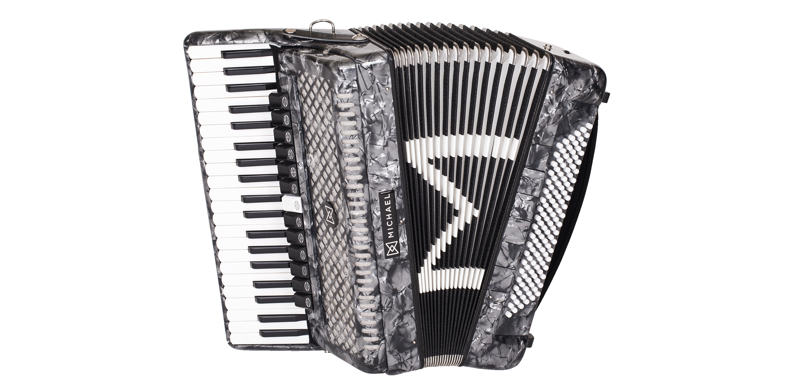
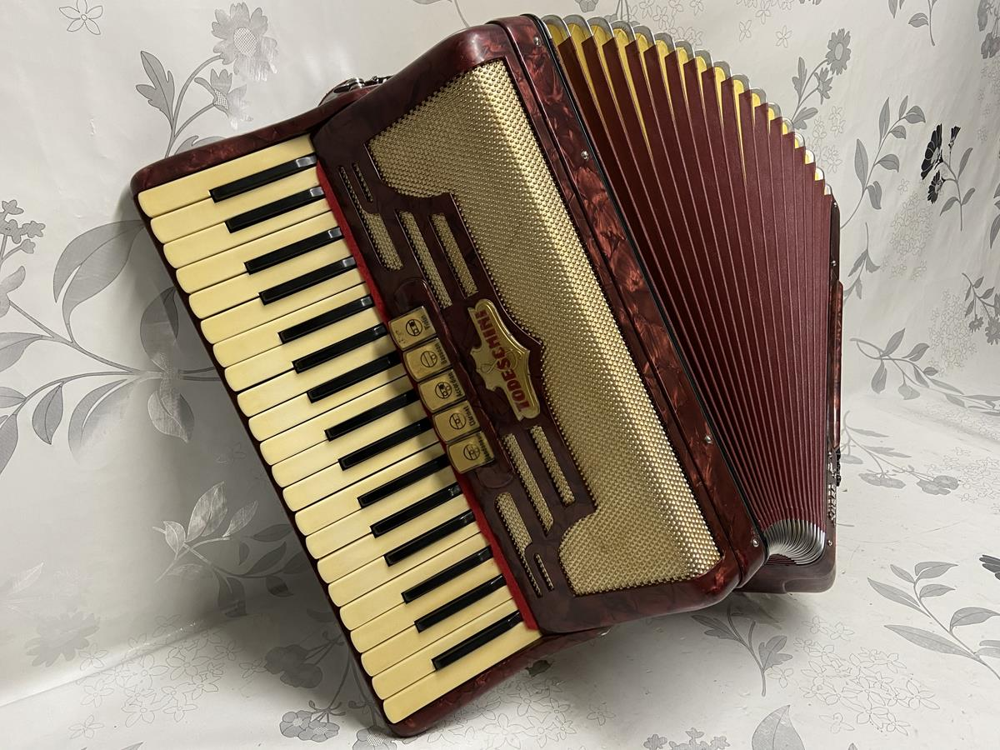

img { width: 80px; height: 80px; }Meu primeiro post
Por: Augusto Schimeikel
Boas-vindas ao meu novo blog! Aqui vou compartilhar dicas sobre acordeons e curiosidades da área musical.

Meu primeiro post
Por: Augusto Schimeikel
Conheça vários tipos de acordeon, ou também a famosa CORDIONA.
Meu primeiro post
Por: Augusto Schimeikel
Boas-vindas ao meu novo blog! Aqui vou compartilhar dicas de programação e curiosidades da área de tecnologia.